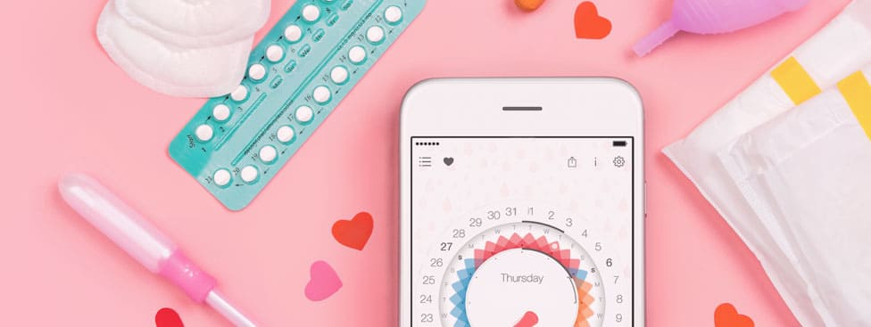

루프 피임법이란?
피임법 중 가장 효과적인 피임 방법의 하나로 손꼽힙니다.
자궁 내 피임 장치(Intrauterine Device IUD)는 다양한 형태와 크기를 가진 작은 플라스틱 장치로서 자궁 강내에 장착하여 피임을 막는 방법입니다. 가장 최신 자궁 내 피임 장치는 피임 효과를 높이기 위하여 구리 성분을 첨가하였으며 3년에서 5년까지 자궁 내에서 지속적으로 사용할 수 있습니다. 구리 성분을 첨가한 자궁 내 장치의 정확한 피임 작용기전은 아직 명확하지 않지만, 일차적 작용은 난자와 정자의 만남을 방지하는 것으로 추측되며, 또한 수정란의 착상을 어느 정도 억지하는 기전도 가능합니다.
자궁 내 피임 장치는 피임을 100% 보장하지는 못하지만 사용자 소홀로 인한 임신을 전적으로 배제할 수 있다는 측면에서 가장 효과적인 피임 방법의 하나로 손꼽힙니다.
시술하기 가장 좋은 시기는 생리가 끝난 직후입니다.
루프 피임법의 장단점
종류 : 노바티, 미레나, 카일리나
장점
- 자궁 내 피임 장치는 먼저 피임 성공률이 높습니다.
- 성공률은 95%, 3년에서 5년까지 지속돼 경제적입니다.
- 모유 수유에 지장을 주지 않습니다.
- 부작용이 거의 없습니다.
- 임신을 원할 경우 언제든지 빼기만 하면 되며 터울 조절을 원하는 부부가 택하면 좋습니다.
단점
- 정기적인 점검을 받아야 합니다.
- 장치가 빠져버리거나 이탈될 수 있습니다.
- 장치를 한 상태로 임신이 되면 자궁 외 임신 확률이 약간 높아질 수 있습니다.